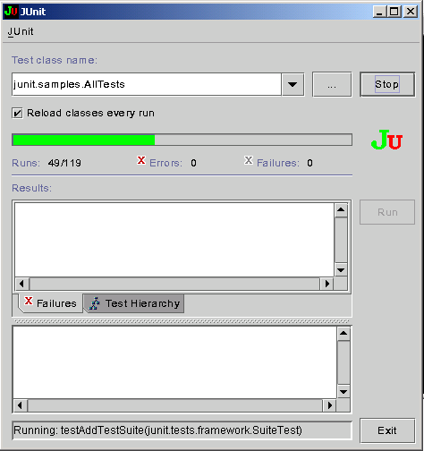

September 12, 2003
Junit学习笔记
 JUnit是由 Erich Gamma 和 Kent Beck 编写的一个回归测试框架（regression testing framework）,供Java开发人员编写单元测试之用。
JUnit是由 Erich Gamma 和 Kent Beck 编写的一个回归测试框架（regression testing framework）,供Java开发人员编写单元测试之用。
1、概述
Junit测试是程序员测试，即所谓白盒测试，因为程序员知道被测试的软件如何（How）完成功能和完成什么样（What）的功能。
Junit本质上是一套框架，即开发者制定了一套条条框框，遵循这此条条框框要求编写测试代码，如继承某个类，实现某个接口，就可以用Junit进行自动测试了。
由于Junit相对独立于所编写的代码，可以测试代码的编写可以先于实现代码的编写，XP 中推崇的 test first design的实现有了现成的手段：用Junit写测试代码，写实现代码，运行测试，测试失败，修改实现代码，再运行测试，直到测试成功。以后对代码的修改和优化，运行测试成功，则修改成功。
Java 下的 team 开发，采用 cvs(版本控制) + ant(项目管理) + junit(集成测试) 的模式时，通过对ant的配置，可以很简单地实现测试自动化。
对不同性质的被测对象，如Class，Jsp，Servlet，Ejb等，Junit有不同的使用技巧，以后慢慢地分别讲叙。以下以Class测试为例讲解，除非特殊说明。
2、下载安装

- 去Junit主页下载最新版本3.8.1程序包junit-3.8.1.zip
- 用winzip或unzip将junit-3.8.1.zip解压缩到某一目录名为$JUNITHOME
- 将junit.jar和$JUNITHOME/junit加入到CLASSPATH中，加入后者只因为测试例程在那个目录下。
- 注意不要将junit.jar放在jdk的extension目录下
- 运行命令,结果如右图。java junit.swingui.TestRunner junit.samples.AllTests
3、Junit架构
下面以Money这个类为例进行说明。
private int fAmount;//余额
private String fCurrency;//货币类型
public Money(int amount, String currency) {
fAmount= amount;
fCurrency= currency;
}
public int amount() {
return fAmount;
}
public String currency() {
return fCurrency;
}
public Money add(Money m) {//加钱
return new Money(amount()+m.amount(), currency());
}
public boolean equals(Object anObject) {//判断钱数是否相等
if (anObject instanceof Money) {
Money aMoney= (Money)anObject;
return aMoney.currency().equals(currency())
&& amount() == aMoney.amount();
}
return false;
}
}
Junit本身是围绕着两个设计模式来设计的：命令模式和集成模式.
- 命令模式
利用TestCase定义一个子类，在这个子类中生成一个被测试的对象，编写代码检测某个方法被调用后对象的状态与预期的状态是否一致，进而断言程序代码有没有bug。
当这个子类要测试不只一个方法的实现代码时，可以先建立测试基础，让这些测试在同一个基础上运行，一方面可以减少每个测试的初始化，而且可以测试这些不同方法之间的联系。
例如，我们要测试Money的Add方法，可以如下:public class MoneyTest extends TestCase { //TestCase的子类
public void testAdd() { //把测试代码放在testAdd中
Money m12CHF= new Money(12, "CHF"); //本行和下一行进行一些初始化
Money m14CHF= new Money(14, "CHF");
Money expected= new Money(26, "CHF");//预期的结果
Money result= m12CHF.add(m14CHF); //运行被测试的方法
Assert.assertTrue(expected.equals(result)); //判断运行结果是否与预期的相同
}
}
如果测试一下equals方法，用类似的代码，如下：public class MoneyTest extends TestCase { //TestCase的子类
public void testEquals() { //把测试代码放在testEquals中
Money m12CHF= new Money(12, "CHF"); //本行和下一行进行一些初始化
Money m14CHF= new Money(14, "CHF");Assert.assertTrue(!m12CHF.equals(null));//进行不同情况的测试
Assert.assertEquals(m12CHF, m12CHF);
Assert.assertEquals(m12CHF, new Money(12, "CHF")); // (1)
Assert.assertTrue(!m12CHF.equals(m14CHF));
}
}
当要同时进行测试Add和equals方法时，可以将它们的各自的初始化工作，合并到一起进行，形成测试基础,用setUp初始化，用tearDown清除。如下：public class MoneyTest extends TestCase {//TestCase的子类
private Money f12CHF;//提取公用的对象
private Money f14CHF;protected void setUp() {//初始化公用对象
f12CHF= new Money(12, "CHF");
f14CHF= new Money(14, "CHF");
}
public void testEquals() {//测试equals方法的正确性
Assert.assertTrue(!f12CHF.equals(null));
Assert.assertEquals(f12CHF, f12CHF);
Assert.assertEquals(f12CHF, new Money(12, "CHF"));
Assert.assertTrue(!f12CHF.equals(f14CHF));
}
public void testSimpleAdd() {//测试add方法的正确性
Money expected= new Money(26, "CHF");
Money result= f12CHF.add(f14CHF);
Assert.assertTrue(expected.equals(result));
}
}
将以上三个中的任一个TestCase子类代码保存到名为MoneyTest.java的文件里，并在文件首行增加import junit.framework.*;，都是可以运行的。关于Junit运行的问题很有意思，下面单独说明。
上面为解释概念“测试基础(fixture)”，引入了两个对两个方法的测试。命令模式与集成模式的本质区别是，前者一次只运行一个测试。 - 集成模式
利用TestSuite可以将一个TestCase子类中所有test***()方法包含进来一起运行，还可将TestSuite子类也包含进来，从而行成了一种等级关系。可以把TestSuite视为一个容器，可以盛放TestCase中的test***()方法，它自己也可以嵌套。这种体系架构，非常类似于现实中程序一步步开发一步步集成的现况。
对上面的例子，有代码如下：public class MoneyTest extends TestCase {//TestCase的子类
....
public static Test suite() {//静态Test
TestSuite suite= new TestSuite();//生成一个TestSuite
suite.addTest(new MoneyTest("testEquals")); //加入测试方法
suite.addTest(new MoneyTest("testSimpleAdd"));
return suite;
}
}
从Junit2.0开始，有列简捷的方法:public class MoneyTest extends TestCase {//TestCase的子类
....
public static Test suite() {静态Test
return new TestSuite(MoneyTest.class); //以类为参数
}
}
TestSuite见嵌套的例子，在后面应用案例中有。
4、测试代码的运行
先说最常用的集成模式。
测试代码写好以后，可以相应的类中写main方法，用java命令直接运行；也可以不写main方法，用Junit提供的运行器运行。Junit提供了textui,awtui和swingui三种运行器。
以前面第2步中的AllTests运行为例，可有四种：
java junit.awtui.TestRunner junit.samples.AllTests
java junit.swingui.TestRunner junit.samples.AllTests
java junit.samples.AllTests
main方法中一般也都是简单地用Runner调用suite()，当没有main时，TestRunner自己以运行的类为参数生成了一个TestSuite.
对于命令模式的运行，有两种方法。
- 静态方法
TestCase test= new MoneyTest("simple add") {
public void runTest() {
testSimpleAdd();
}
}; - 动态方法
TestCase test= new MoneyTest("testSimpleAdd");
我试了一下，
public class MoneyTest extends TestCase {//TestCase的子类
private Money f12CHF;//提取公用的对象
private Money f14CHF;
public MoneyTest(String name){
super(name);
}
protected void setUp() {//初始化公用对象
f12CHF= new Money(12, "CHF");
f14CHF= new Money(14, "CHF");
}
public void testEquals() {//测试equals方法的正确性
Assert.assertTrue(!f12CHF.equals(null));
Assert.assertEquals(f12CHF, f12CHF);
Assert.assertEquals(f12CHF, new Money(12, "CHF"));
Assert.assertTrue(!f12CHF.equals(f14CHF));
}
public void testAdd() {//测试add方法的正确性
Money expected= new Money(26, "CHF");
Money result= f12CHF.add(f14CHF);
Assert.assertTrue(expected.equals(result));
}
// public static void main(String[] args) {
// TestCase test=new MoneyTest("simple add") {
// public void runTest() {
// testAdd();
// }
// };
// junit.textui.TestRunner.run(test);
// }
public static void main(String[] args) {
TestCase test=new MoneyTest("testAdd");
junit.textui.TestRunner.run(test);
}
}
再给一个静态方法用集成测试的例子：
TestSuite suite= new TestSuite();
suite.addTest(
new testCar("getWheels") {
protected void runTest() { testGetWheels(); }
}
);
suite.addTest(
new testCar("getSeats") {
protected void runTest() { testGetSeats(); }
}
);
return suite;
}
5、应用案例
- Junit Primer例程，运行如下：java com.hedong.JunitLearning.Primer.ShoppingCartTest
- Ant+Junit+Mailto实现自动编译、调试并发送结果的build.xml
- JUnit实施,写得很棒，理解也深刻。例程运行如下：java com.hedong.JunitLearning.car.testCarNoJunit
java junit.swingui.TestRunner com.hedong.JunitLearning.car.testCar - Junit与log4j结合，阿菜的例程运行：cd acai
ant junit
6、一些问题
有人在实践基础上总结出一些非常有价值的使用技巧，我没有经过一一“测试”，暂列在此。
- 不要用TestCase的构造函数初始化Fixture，而要用setUp()和tearDown()方法。
- 不要依赖或假定测试运行的顺序，因为JUnit利用Vector保存测试方法。所以不同的平台会按不同的顺序从Vector中取出测试方法。不知3.8中是不是还是如此，不过它提供的例子有一个是指定用VectorSuite的，如果不指定呢？
- 避免编写有副作用的TestCase。例如：如果随后的测试依赖于某些特定的交易数据，就不要提交交易数据。简单的回滚就可以了。
- 当继承一个测试类时，记得调用父类的setUp()和tearDown()方法。
- 将测试代码和工作代码放在一起，一边同步编译和更新。（使用Ant中有支持junit的task.）
- 测试类和测试方法应该有一致的命名方案。如在工作类名前加上test从而形成测试类名。
- 确保测试与时间无关，不要依赖使用过期的数据进行测试。导致在随后的维护过程中很难重现测试。
- 如果你编写的软件面向国际市场，编写测试时要考虑国际化的因素。不要仅用母语的Locale进行测试。
- 尽可能地利用JUnit提供地assert/fail方法以及异常处理的方法，可以使代码更为简洁。
- 测试要尽可能地小，执行速度快。
- 把测试程序建立在与被测对象相同的包中
- 在你的原始代码目录中避免测试码出现，可在一个源码镜像目录中放测试码
- 在自己的应用程序包中包含一个TestSuite测试类
7、相关资源下载
以下jar包，我只是做了打包、编译和调试的工作，供下载学习之用，相关的权利属于原作者。
8、未完成的任务
- httpunit
- cactus
- 将Junit用链接池测试
主要参考文献：
- JUnit入�T
http://www.dotspace.twmail.org/Test/JUnit_Primer.htm - 怎样使用Junit Framework进行单元测试的编写
http://www.chinaunix.net/bbsjh/14/546.html - Ant+Junit+Log4J+CVS进行XP模式开发的建立
http://ejb.cn/modules/tutorials/printpage.php?tid=4 - 用HttpUnit测试Web应用程序
http://www.zdnet.com.cn/developer/code/story/0,2000081534,39033726,00.htm - 有没有用过Cactus的，Web层的测试是Cactus还是JUnit？
http://www.jdon.com/jive/thread.jsp?forum=16&thread=9156 - Ant+junit的测试自动化 biggie（原作）
http://www.csdn.net/Develop/article/19%5C19748.shtm - JUnit实施
http://www.neweasier.com/article/2002-08-07/1028723459.html - JUnitTest Infected: Programmers Love Writing Tests
http://junit.sourceforge.net/doc/testinfected/testing.htm - JUnit Cookbook
http://junit.sourceforge.net/doc/cookbook/cookbook.htm - JUnit Primer
http://www.itu.dk/~lthorup/JUnitPrimer.html - IBM DevelopWorks
http://www-106.ibm.com/search/searchResults.jsp?query=junit&searchScope=dW&searchType=1&searchSite=dWChina&pageLang=zh&langEncoding=gb2312&Search.x=0&Search.y=0&Search=Search
我当时在学习的时候，发现一个问题，就是：
假定$JUNITHOME为junit解压缩后的目录，
进行$JUNITHOME目录，用jar将junit目录打包，然后将此包加入CLASSPATH，运行java junit.swingui.TestRunner junit.samples.AllTests命令时，会出现你所说的错误。
但是，
如果只是将$JUNITHOME这个目录加入到CLASSPATH中，则不出现问题，119个测试都会通过。
后来，我没有仔细研究这个问题，也就没有将这点内容写在这儿。
你按上述第二种方法试一下，是不是还是有问题？
如果你找到了问题的答案，欢迎来信指点一下。：）
在java junit.swingui.TestRunner junit.samples.AllTests的时候，你不会出LoadedFromJar
的错误吗？119的测试都ok吗？
我在google上看见也有人会出现LoadedFromJar测试不过的情况。
原来是tag的问题
西大哥，你的邮件我收到了！太好了你
不过我还得试试看再说。
因为Win32下别人编译过得Netpbm只到v10.6
而他主页有句话
Older packages, such as libwmf-0.2.2, netpbm-10.6, and wv-0.7.2, sometimes need libjpeg.dll.
Until these are updated, a provisional solution is to copy jpeg-62.dll to libjpeg.dll
而我的正是其中的netpbm-10.6,对，问题就出在libjpeg.dll上了，缺这个，我就把jpeg-62改名为libjpeg放到了需要他的文件夹
结果进入galleryupload之后，说Library里的和caller的尺寸不一致....ft~~
能不能帮我编译一个高点版本的netpbm?那可能就没这个dll的问题了，我没有Linux，也没编译过 :)
如果方便，请帮忙帮到底吧~细细
另外我按照你的邮件再装一遍，不过还是想要个新一点的Stable Netpbm
嗯，就这些。严重偏离你的这个主题..
Posted by: diffhapp at September 12, 2003 10:02 PM